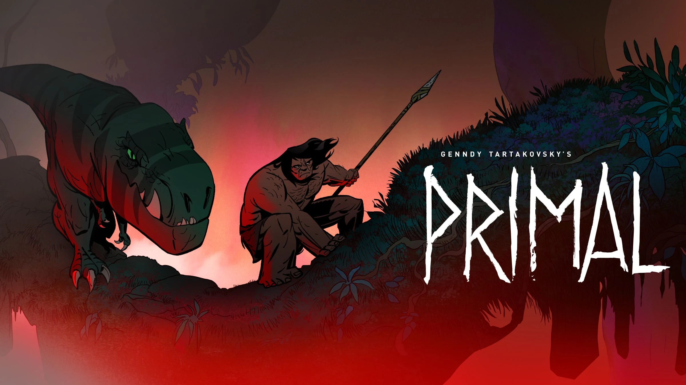
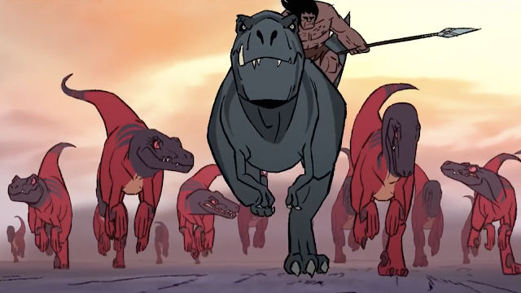
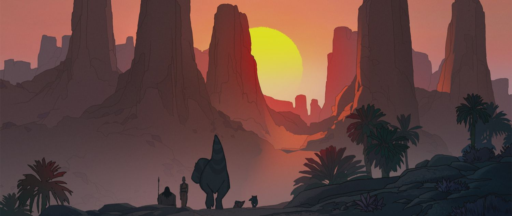

Lo que hace a "Primal" una obra revolucionaria no es lo que dice, sino lo que calla. Genndy Tartakovsky elimina casi por completo el diálogo hablado, obligando al espectador a prestar atención al lenguaje corporal, la música y el diseño sonoro. Esta decisión no es un truco estético, sino una necesidad narrativa que nos transporta a una era donde el lenguaje no existe, permitiendo que la emoción pura y el instinto de supervivencia sean los únicos motores de la trama, generando una tensión que pocas series modernas logran.
La relación entre un hombre de las cavernas y un tiranosaurio rex podría haber caído en el cliché de "mascota y dueño", pero la serie subvierte esto inmediatamente. Ambos personajes se unen no por amistad inicial, sino por el trauma compartido de perder a sus familias de forma brutal. Su simbiosis evoluciona capítulo a capítulo, pasando de una alianza por conveniencia mutua a una lealtad inquebrantable, demostrando que en un mundo hostil, la empatía es la herramienta de supervivencia más poderosa.
Ver ficha técnica en: IMDB - Genndy Tartakovsky's Primal
La violencia en Primal es gráfica, sangrienta e implacable, pero nunca se siente gratuita. Cada enfrentamiento tiene un peso real; las heridas duelen, el cansancio se nota y la muerte es definitiva. La serie utiliza el "gore" como un pincel artístico para contrastar la fragilidad de la vida con la brutalidad de la naturaleza prehistórica. Hay una extraña poesía en cómo la serie alterna momentos de paz absoluta y paisajes hermosos con explosiones repentinas de furia roja y frenética.
Crítica especializada: Rotten Tomatoes Reviews
Técnicamente, la serie destaca por su uso de líneas gruesas, sombras duras y una paleta de colores que refleja el estado emocional de los protagonistas. A diferencia de la animación digital moderna que busca el hiperrealismo, Primal abraza un estilo "pulp" y de cómic clásico de los años 70. La fluidez de la animación en las escenas de acción es magistral, jugando con los tiempos: pausas extremadamente lentas seguidas de movimientos tan rápidos que el ojo apenas puede seguirlos.
Sitio Oficial: Adult Swim - Primal